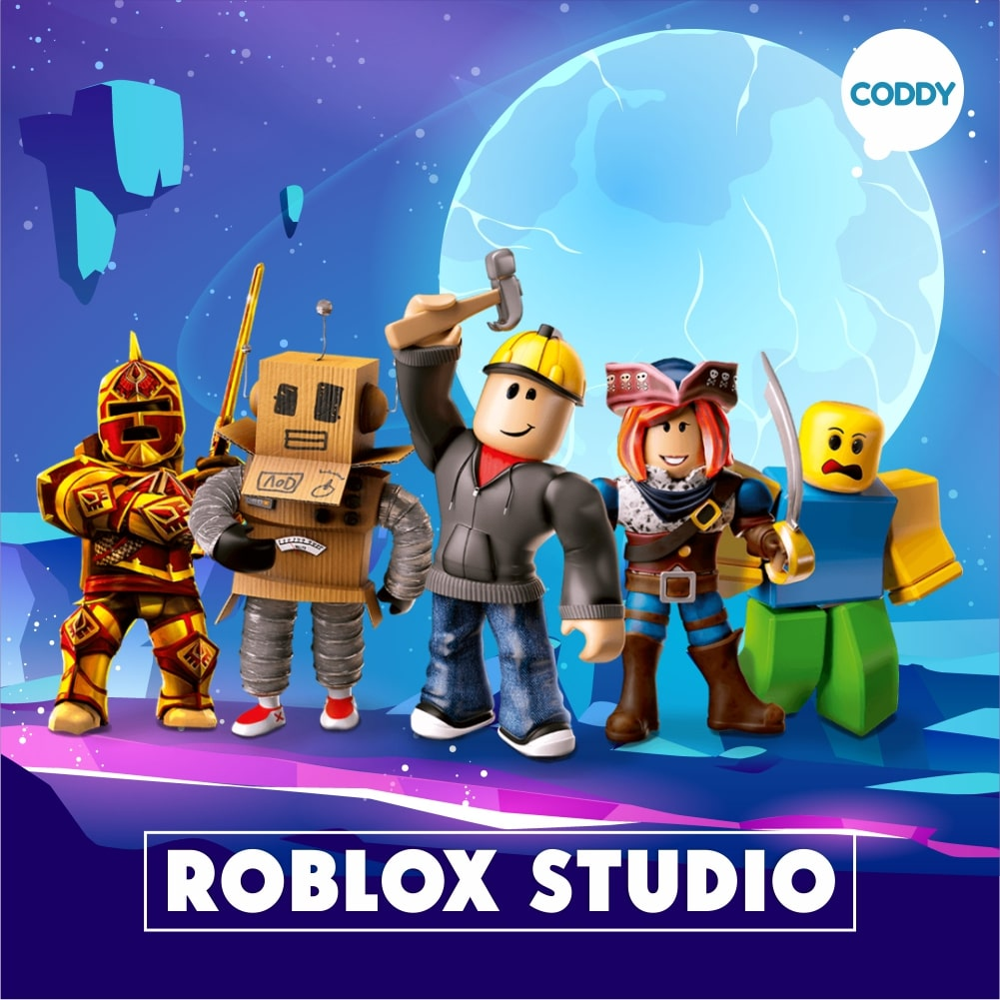

Roblox Studio
Это приложени с помощью которого можно создавать игры в Roblox
Roblox Studio рассчитан исключительно на создание трёхмерных игр, интерфейса к ним и внутриигровых вещей для Roblox; имеет встроенные редактор Luau, инструменты управления игровой средой, шаблоны игр и плагины. Кроме этого, есть «Toolbox» (или же «Creator Marketplace»), представляющий собой хранилище моделей, изображений, аудио, плагинов и другого контента, создаваемого сообществом Roblox и его администраторами.
Идею создать Roblox Studio Дэвиду Базуки дала программа под названием «Interactive Physics» (с англ. — «Интерактивная Физика») — двухмерно-моделирующая физическая лаборатория, вышедшая в 1989 году, которую использовали студенты по всему миру, чтобы увидеть, как, например, разобьются две машины, или чтобы построить разрушаемые здания. Дэвид и Эрик Кассел были удивлены работами детей и подростков в ней, благодаря чему, вдохновились воспроизвести то же самое, но в гораздо большем масштабе. в 2006 году Roblox Studio стал доступен каждому пользователю Roblox, после чего так же стал использоваться для обучения детей и подростков